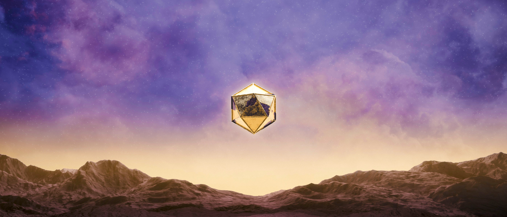

Picture of them

ODESZA is an American electronic music duo formed in Bellingham, Washington. The group consists of Harrison Mills and Clayton Knight, known for their unique blend of electronic beats, melodic vocals, and lush soundscapes.
The logo of the electronic duo ODESZA is an icosahedron, a geometric shape with 20 faces. The symbol appears on their albums, merchandise, and during live shows. The band says the icosahedron represents many aspects of their sound and their approach to music

ODESZA has received numerous awards and nominations including: